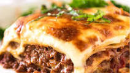

Lasagna

How to Make Lasagna
For this recipe, we are essentially making a thick, meaty tomato sauce and layering that with noodles and cheese into a casserole. Here's the run-down:
Ingredients
- Lasagna sheets
- Beef mince
- Tomato sauce
- White sauce
Steps
- Start by making the sauce with ground beef, bell peppers, onions, and a combo of tomato sauce, tomato paste, and crushed tomatoes.
- Let this simmer while you boil the noodles and get the cheeses ready. We're using ricotta, shredded mozzarella, and parmesan -- like the mix of tomatoes, this 3-cheese blend gives the lasagna great flavor!
- From there, it's just an assembly job. A cup of meat sauce, a layer of noodles, more sauce, followed by a layer of cheese. Repeat until you have three layers and have used up all the ingredients.
- Bake until bubbly and you're ready to eat!